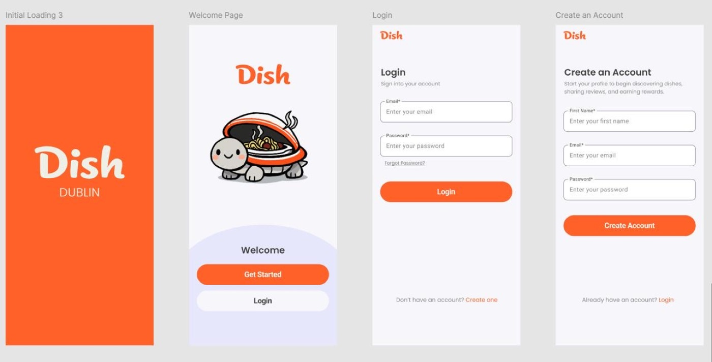
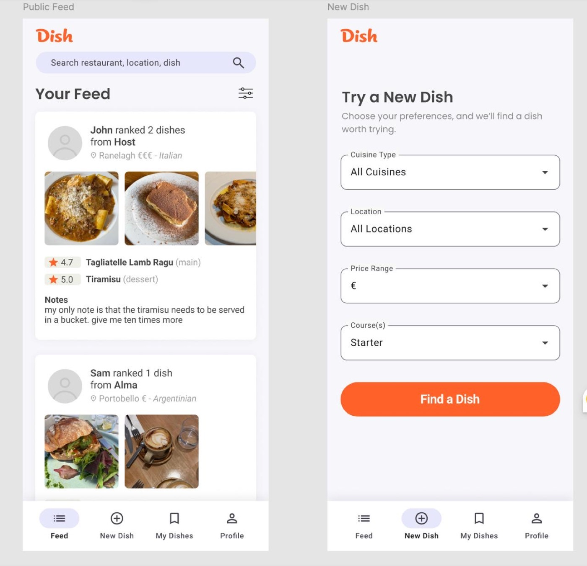
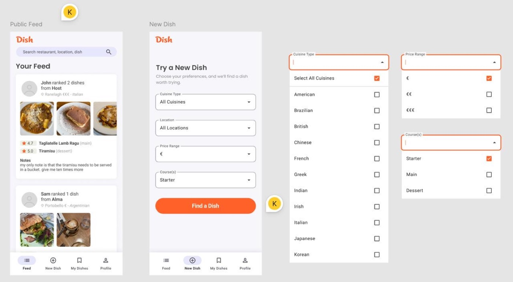
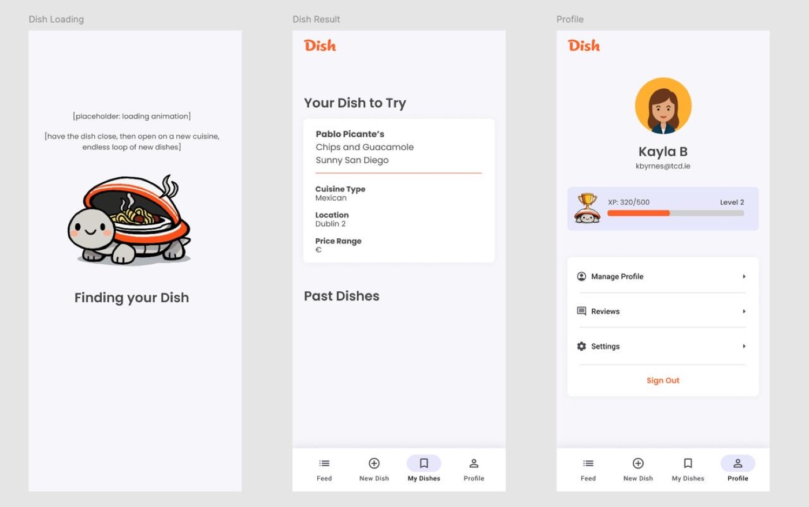
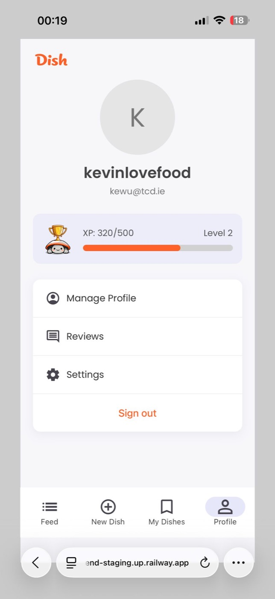
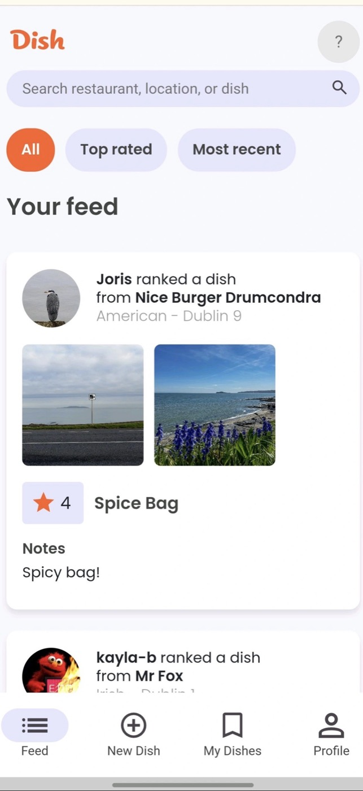

Role
Backend Contributor · Database Contributor · UI Contributor
( project 01 )
Gamified Food Discovery App for Dublin
Dish is a team-built food discovery web app designed to help users try new restaurants in Dublin with less decision fatigue. Users set their preferences, receive a restaurant-and-dish recommendation, then review the experience to build XP and unlock profile rewards. My contribution focused on backend development, database structure, SQL logic and selective UI polish.
Role
Backend Contributor · Database Contributor · UI Contributor
Focus
Recommendation flow, profile/feed logic, SQL structure and gamified interaction.
What It Shows
Team product development, practical backend logic and gamified UX thinking.
( product loop )
Built as a team project; this page focuses on the areas I contributed to most directly.
Discovery Input
Users choose cuisine, location, price range and course type instead of scrolling through endless restaurant options.
Recommendation Output
The app returns one clear restaurant-and-dish suggestion, making the decision moment simple and immediate.
Retention Layer
Reviews, uploads, XP and profile rewards turn discovery into a repeatable habit rather than a one-off search.
( contribution )
My contribution sat between the system layer and the player-facing feel of the app. I worked on backend routes, database and SQL logic, then also contributed some front-end interaction polish to support the app's gamified tone.
App Stack
Contribution Lens
Backend stability, relational data structure and interaction details that made the product loop feel more playful.
( visuals )

The first-touch journey establishes the product's soft, playful tone before users enter the main discovery loop. It frames Dish less like a restaurant directory and more like a guided food companion.

The app combines a social feed with a focused recommendation tool, allowing users to browse what others tried while still moving quickly into their own next dish decision.

This part of the experience shows the structured input layer behind the app. The backend and data model needed to support clear category logic, reliable option handling and recommendation readiness.

From selection to result to profile reward, the app makes the dish suggestion feel like an event. That made the handoff between system logic and front-end feedback especially important.

The XP bar and profile layer reinforce return behaviour. This is where the product shifts from one-time recommendation into a lightweight habit loop with visible progress.

User-generated posts connect the data model, profile identity and discovery interface together. Reviews and uploaded dish images help the product feel social rather than purely utility-driven.